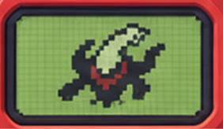
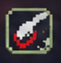

this page
Checking this tab…
Auto leaves a site alone when it already has a dark theme.
Simple inverts the whole page. Use it for apps that draw text on a canvas.
Click an element, then choose how to fix it.
Shortcut: Alt+Shift+D